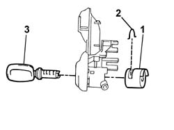

7005C14 front side door lock barrel (in handle) r r with handle removed
- Path
- Procedures > 70 FITTINGS > 7005 PASSENGER COMPARTMENT FRONT SIDE DOORS > 7005C front lock controls > 7005C14 front side door lock barrel (in handle) r r with handle removed
- Kind
- repair procedure (removal / refitting; the operation number is the code)
- Applies to
- all engines; all production periods
- Interactive page
- https://sloeber94.github.io/elrnDB-fDbl/en/#/2584994
Applies to: all engines; all production periods
Applies to: all engines; all production periods
 Removing
Removing
 Refitting
Refitting1. Using a suitable tool, remove the anti break-in device.
2. Remove the retaining clip.
3. Insert the key and remove the lock barrel from its seating.

Applies to: all engines; all production periods
Refitting
RemovingFit the retaining clip in its seating.
Insert the lock barrel in its seating until it clicks into place.
Insert the anti break-in device.